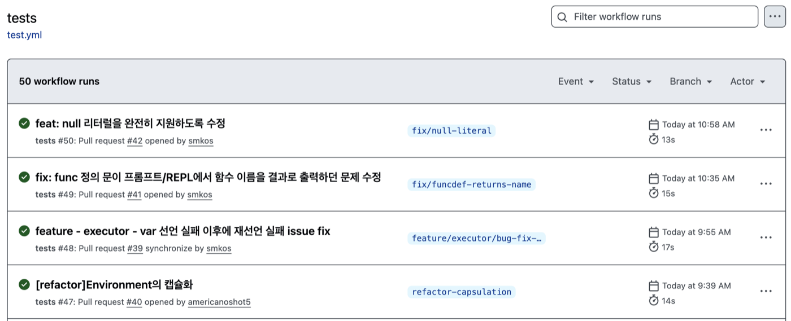
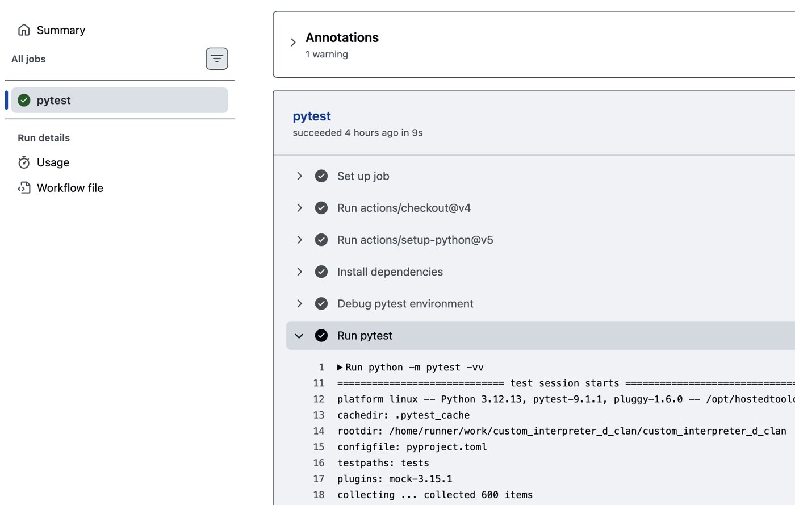

Tokenizer / 정적배열
CodeFab Interpreter Project
S-expression 인터프리터
Team Roles
조원별 역할
Assembler / Class 기능
Checker / 실행전 최적화
Executor / Function 기능
통합테스트 / import 문 & Prompt Shell
조장Custom Interpreter Team Project
S-expression 인터프리터
괄호로 감싼 리스트 구조로 코드와 데이터를 표현하는 표기법.
Lisp 계열 언어에서 대표적으로 사용됨.
프로그램 자체도 리스트 데이터처럼 다룰 수 있다는 점이 핵심.
함수형 사고, 재귀, 메타프로그래밍, 언어 확장이 자연스럽게 이어짐.
1950년대 후반 John McCarthy가 인공지능 연구를 위해 Lisp를 설계하며 등장함.
코드와 데이터를 같은 구조로 다루는 단순한 표현력을 우선함.
연산자와 피연산자가 같은 리스트 안에 놓여 문법 구조가 단순함.
파싱 결과도 트리 형태로 자연스럽게 이어짐.
>>> func fib (n)
... (if (< n 2)
... (return n)
... (return (+ (fib (- n 1)) (fib (- n 2)))))
...
>>> print (fib 10)
55.0Team Decision
언어 수정사항
S-expression은 모든 표현을 소괄호로 감싸주어야 함.
REPL 입력을 더 자연스럽게 만들기 위해 최상위 global 소괄호를 제거함.
Before
((var total 0)
(set! total (+ total 1))
(print total))After
var total 0
set! total (+ total 1)
print totalFeature Demo
기능 구현 소개
데모 파일 1~4번으로 주요 기능을 검증함.
기초 문법, 함수, 클래스/모듈, 디버그 기능을 순서대로 확인함.
1. 기초 문법
변수 선언/출력, 조건문, 반복문, 블록 스코프, 정적배열 생성·수정·조회
(var score 82)
(print "점수:")
(print score)
(if (> score 90)
(print "학점: A")
(if (> score 80)
(print "학점: B")
(print "학점: C")))
(print "1부터 5까지 합계:")
(var total 0)
(for i 1 6
(set! total (+ total i)))
(print total)
(print "블록 스코프 확인 (바깥 x는 영향받지 않음):")
(var x 100)
{
(var x 999)
(print "블록 안쪽 x:")
(print x)
}
(print "블록 바깥 x:")
(print x)
(print "배열: 점수 5개의 평균")
(var scores [5])
(set-index! scores 0 90)
(set-index! scores 1 85)
(set-index! scores 2 78)
(set-index! scores 3 92)
(set-index! scores 4 88)
(var sum 0)
(for i 0 5
(set! sum (+ sum scores[i])))
(print (/ sum 5))점수:
82.0
학점: B
1부터 5까지 합계:
15.0
블록 스코프 확인 (바깥 x는 영향받지 않음):
블록 안쪽 x:
999.0
블록 바깥 x:
100.0
배열: 점수 5개의 평균
86.62. 함수 / 재귀 / 클로저
(func add (a b)
(return (+ a b)))
(print "3 + 4 =")
(print (add 3 4))
(func factorial (n)
(if (= n 0)
(return 1)
(return (* n (factorial (- n 1))))))
(print "팩토리얼 (재귀): 5! =")
(print (factorial 5))
(func fib (n)
(if (< n 2)
(return n)
(return (+ (fib (- n 1)) (fib (- n 2))))))
(print "피보나치 (재귀): fib(10) =")
(print (fib 10))
(var base 10)
(func addBase (x)
(return (+ base x)))
(print "클로저: 정의 시점의 외부 환경을 참조하는 함수")
(print (addBase 5))3 + 4 =
7.0
팩토리얼 (재귀): 5! =
120.0
피보나치 (재귀): fib(10) =
55.0
클로저: 정의 시점의 외부 환경을 참조하는 함수
15.03. 클래스 상속 + 모듈 import
demo/demo3_module_utils.cf
(func square (n)
(return (* n n)))
(func cube (n)
(return (* n (* n n))))
demo/demo3_classes_and_modules.cf
(class Animal {
(method init (name) {
(set-field! This name name)
})
(method speak () {
(return "...")
})
(method describe () {
(print (get-field This name))
(print (This.speak))
})
})
(class Dog : Animal {
(method speak () {
(return (+ (Super.speak) " Woof!"))
})
})
(var d (Dog "Rex"))
(d.describe)
(print "instanceof 확인:")
(print (instanceof d Dog))
(print (instanceof d Animal))
(import "demo/demo3_module_utils.cf" alias util)
(print "5의 제곱:")
(print (util.square 5))
(print "3의 세제곱:")
(print (util.cube 3))Rex
... Woof!
instanceof 확인:
True
True
5의 제곱:
25.0
3의 세제곱:
27.04. 디버그 모드
(print "=== Demo 4: 디버깅 데모 ===")
(var total 0)
(var step1 10)
(set! total (+ total step1))
(var step2 20)
(set! total (+ total step2))
(var step3 30)
(set! total (+ total step3))
(print "합계:")
(print total)--- 디버그 명령 시퀀스 ---
> break 6
> watch total
> continue
> step
> step
> inspect
> continue
--- 실행 로그 ---
[debug] Stopped at line 1
[debug] Breakpoint set at line 6
[debug] Watch total: <undefined>
[debug] === Demo 4: 디버깅 데모 ===
[debug] Stopped at line 7
[debug] Watch total: 30.0
[debug] Stopped at line 8
[debug] Watch total: 30.0
[debug] Stopped at line 9
[debug] Watch total: 60.0
[debug] step1 = 10.0
[debug] step2 = 20.0
[debug] step3 = 30.0
[debug] total = 60.0
[debug] 합계:
[debug] 60.0
[debug] Program finished
[debug] Watch total: 60.0Best Practices
Best Practices
기능 완성만큼 중요했던 것은 협업 구조.
새 코드가 들어와도 이전 기능을 믿을 수 있고, 문제를 빠르게 발견할 수 있어야 함.
1. 패턴 적용 범위와 리팩토링 의사결정
모든 패턴을 같은 깊이로 적용하지 않음.
문제의 범위에 맞는 구조를 선택하고, 보류한 패턴까지 판단 기준으로 남김.
Tokenizer → Assembler → Checker → Executor 단계로 책임을 분리함.
Stmt와 Expr를 실행 단위로 삼아 언어 문법을 런타임 동작으로 연결함.
Checker와 Executor 안의 타입별 분기를 테이블로 모아 변경 범위를 제한함.
debug 명령을 Command 객체로 분리해 명령 추가와 수정 범위를 줄임.
AST 전체에 accept/visit 구조를 넣는 비용 대비 효과가 작아 보류함.
Interpreter: AST를 실행 단위로 관리
Before
# 문자열을 바로 실행하려는 구조
run_line("(var x 1)")
if tokens[0] == "var":
env[name] = eval(value)
elif tokens[0] == "print":
print(eval(expr))
...
After
# 문법을 AST 객체로 먼저 표현
Program([
VarStmt("x", LiteralExpr(1)),
PrintStmt(IdentifierExpr("x")),
])
# 실행기는 AST를 해석만 담당
executor.execute(program)효과: 문법 구조를 AST로 고정함.
Checker/Executor가 같은 구조를 각자 목적에 맞게 해석함.
Dispatch: 변경 영향도 축소
Before
def execute(stmt):
if isinstance(stmt, VarStmt):
...
elif isinstance(stmt, IfStmt):
...
elif isinstance(stmt, WhileStmt):
... # 새 문법을 중간에 추가
elif isinstance(stmt, ForStmt):
...
After
_STMT_DISPATCH = {
VarStmt: "_execute_varstmt",
IfStmt: "_execute_ifstmt",
ForStmt: "_execute_forstmt",
WhileStmt: "_execute_whilestmt",
}
def _execute_whilestmt(stmt):
...효과: 새 Stmt 추가 시 분기 함수 전체를 건드리지 않음.
dispatch table 1줄과 전용 메서드로 변경 지점을 좁힘.
Command: debug 명령 분리
Before
def _handle_command(text):
if text == "continue":
self._continue()
elif text == "inspect":
self._inspect_scope()
elif text.startswith("watch "):
self._add_watch(text)
...
After
# 1. 신규 명령 동작만 작성
class RestartDebugCommand:
def execute(session):
...
# 2. 생성 담당 parser에 1줄 등록
if text == "restart":
return RestartDebugCommand()효과: 신규 명령은 자기 Command 클래스에 동작만 작성함.
생성 담당 parser에는 한 줄만 등록하면 됨.
효과: 패턴을 많이 넣는 것보다 적용 지점을 좁힘.
변경이 자주 일어나는 지점에만 적용해 가독성과 확장성을 높임.
2. GitHub Actions로 회귀 테스트 강제
기능 개발이 끝날 때마다 해당 테스트를 회귀 테스트 목록에 추가함.
PR에서 pytest가 100% 통과하지 않으면 merge할 수 없도록 강제함.
효과: 신규 기능이 기존 기능을 깨뜨리는지 자동 확인함.
리뷰어가 전체 시나리오를 수동 실행하지 않아도 안정성을 판단할 수 있었음.


3. 기능 완성 후 사용자 관점 테스트
구현 완료 후 실제 사용 흐름으로 입력해봄.
내부 테스트만으로 드러나기 어려운 버그를 찾아냄.
선언 실패 후 재선언 오류
문법 오류로 실패한 선언이 환경에 남음.
이후 올바른 재선언까지 중복 변수로 처리되던 문제를 발견함.
(var y (10 + 1)) ; 실패
(var y (+ 10 1)) ; y가 이미 정의됨함수 정의 결과가 자동 출력
REPL에서 함수 정의만 해도 함수명이 결과처럼 출력됨.
실행 결과와 선언 결과가 섞여 보이던 문제를 수정함.
>>> func xx (n) (print n)
xx ; 기존: 함수명이 자동 출력됨
>>> xx 20
20.0void 함수 조건식과 null 지원
값을 반환하지 않는 함수를 if 조건에 넣어봄.
null 값이 언어 차원에서 충분히 처리되지 않는 문제를 확인함.
(func logOnly ()
(print "check"))
(if (logOnly)
(print "then")
(print "else"))사용자 테스트는 마지막 안전망.
“실제로 쓰기 편한지”를 확인해주는 역할을 함.
Test Driven Collaboration
테스트 분포
기능이 늘어나고 내부 구조가 바뀌어도 테스트가 이전 동작을 확인해줌.
새 기능을 붙이거나 리팩토링할 때 무엇이 깨졌는지 빠르게 알 수 있었음.
개발 속도와 안정성을 함께 얻을 수 있었음.
- 기능별 테스트로 기대 동작을 먼저 고정
- 변경 후 pytest로 기존 기능 회귀 여부 확인
- 통합 테스트로 실제 사용자 흐름까지 보호
- 리팩토링 후에도 같은 결과가 유지되는지 검증
모듈 테스트 506
506
Tokenizer / Assembler / Checker / Executor / Shell 단위 책임을 고정하는 테스트
통합 테스트 96
96
function / class / array / import / optimization / prompt shell / end-to-end
총 602개 pytest 수집 테스트
기능 개발이 끝난 테스트는 바로 CI에 추가함.
pytest 목록에 넣어 회귀 테스트로 고정함.
602개 테스트 실행 기준 TOTAL 95%를 기록함.
src 전체 실행 가능 코드 라인 1,853개 중 98개만 미커버로 남음.
- Assembler / Checker / Executor96% / 99% / 97%
- Optimizer / Prompt Shell95% / 96%
Retrospective
소감
김일도님
AI 도구가 프로젝트 이해, 리팩토링, 테스트 보강까지 도와줄 수 있다는 점이 인상적이었다. 현업에서도 오래된 코드를 개선하는 데 적극 활용해보고 싶다.
손지영님
이슈와 버그를 함께 해결하려는 분위기가 좋았다. 중간중간 리팩토링을 하니 구조 이해와 기능 추가가 쉬워졌고, 나중에 한 번에 고치는 것보다 비용이 적다는 것을 체감했다.
윤길중님
TDD와 GitHub 기반 협업 프로세스를 직접 경험한 의미 있는 시간이었다. AI 도구의 강력함도 확인했고, 보안 기준이 갖춰진다면 부서 DX에도 활용 가능성이 크다고 느꼈다.
여상훈님
GitHub로 함께 개발하니 같은 목표를 향해 움직인다는 느낌이 컸다. PR rule로 안정성을 확보할 수 있었고, AI 도구도 기대보다 편하고 강력했다.
김상민님
TDD가 매우 강력하다고 느꼈다. 사용 방식과 기대 동작을 먼저 정하고 개발하니 목표가 흔들리지 않았고, 진척률도 테스트 통과 여부로 자연스럽게 확인할 수 있었다.